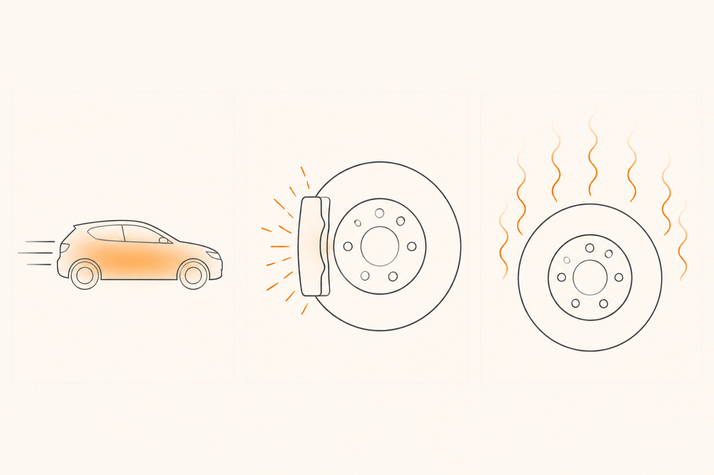

Frenar es convertir movimiento en calor
Imagina que tienes las manos congeladas en pleno enero y las frotas con fuerza. Sale calor. Las palmas se calientan, casi te queman. No has añadido energía mágicamente: has convertido el movimiento de tus manos en calor por fricción. Los frenos de un coche hacen exactamente eso, pero con mil quinientos kilos en marcha en lugar de dos manos.
La pregunta del millón
Cuando frenas, el coche para. Hasta ahí, fácil. Pero el movimiento que tenía hace cinco segundos no desaparece — la energía nunca desaparece, solo se transforma. Si el coche estaba moviéndose y ahora está quieto, esa energía se ha ido a algún sitio. ¿A cuál?
Esa pregunta es todo el curso. Toda la maquinaria que vamos a desmontar — pinzas, pastillas, discos, latiguillos, ABS, regenerativa — existe para responderla bien. Esta píldora resuelve la respuesta básica. Las otras siete cuentan cómo se ejecuta esa respuesta de forma fiable, predecible y segura.
Energía cinética: el movimiento como energía guardada
El movimiento de un coche es energía. Se llama energía cinética: la que tiene un objeto por el simple hecho de moverse. Y depende de dos cosas:
Cuanto más rápido va, más energía. Cuanto más pesado es, más energía. Hasta aquí todo intuitivo. Empujar un carrito de la compra vacío es fácil; empujarlo lleno cuesta más. Y empujarlo rápido cuesta todavía más que empujarlo lento.
Pero aquí hay una sorpresa. La masa influye de forma "normal": el doble de masa, el doble de energía. La velocidad influye de forma cuadrática: el doble de velocidad cuadruplica la energía. Una pelota a 30 km/h te hace cosquillas; a 60 km/h te deja moratón; a 120 km/h te rompe un dedo. No duele "el doble", duele cuatro veces más a cada salto.
Esta es la primera idea que cambia cómo miras la conducción: chocar a 100 km/h no es "el doble de grave" que a 50. Es cuatro veces peor. Y tus frenos lo saben.
Fricción: la conversión
Toda esa energía cinética hay que llevársela a algún sitio. El truco de los frenos es elegantemente brutal: forzar dos superficies a rozarse a propósito. La pastilla aprieta contra el disco mientras el disco gira con la rueda, y la fricción convierte la energía cinética en calor. El coche pierde movimiento; los frenos ganan temperatura.
No es destrozo salvaje, es ingeniería fina. Las pastillas se diseñan para gastarse de forma predecible: como una goma de borrar, que se desgasta a propósito mientras el papel queda intacto. Si fuera al revés — que se gastara el disco y la pastilla durase para siempre — tendrías que cambiar discos cada dos por tres. La pastilla es la parte sacrificable. Eso lo profundizamos en la píldora 4.

Disipación: el calor tiene que irse
Si convertir movimiento en calor fuera la única tarea, los frenos serían triviales. Pero hay un segundo problema: ese calor tiene que salir de allí. Si se queda atrapado, los discos se calientan, las pastillas se calientan, y todo el sistema deja de morder bien.
Por eso los discos de freno están al aire libre, son grandes, y muchos llevan canales internos — los discos ventilados. Como una pizza recién hecha: si la dejas en la encimera, se enfría sola; si la metes en una caja cerrada, queda atrapado el calor y sigue ardiendo. Los discos son la pizza en la encimera, y los ventilados son como soplar también por debajo.
Por eso los camioneros reducen marcha al bajar un puerto en lugar de quemar los frenos: dejan que el motor frene parte de la energía (la frenada motor) y reparten la disipación. La energía se sigue convirtiendo, pero parte se la come el motor en vez de los discos.
La frase que te llevas
Frenar es convertir energía cinética en calor por fricción, y disipar ese calor al aire antes de saturarse. Toda la maquinaria del coche existe para hacer esto bien y de forma predecible.
Con esta idea raíz montada, la siguiente píldora resuelve el primer puzzle: cómo logra una pierna humana, pisando un pedal pequeño, aplicar la fuerza necesaria para detener un coche entero. Spoiler: no la aplica directamente. Hay un truco hidráulico.
medio Si pasas de 50 km/h a 100 km/h, ¿cuánta más energía tienen que disipar tus frenos al detenerte?
fácil Un camionero baja un puerto largo. En lugar de pisar el freno todo el rato, mete una marcha más corta. ¿Por qué?
reto Un cliente vuelve al concesionario: "Bajé un puerto largo y, de repente, el freno parecía que se iba al fondo. ¿Está roto el coche?". Explícale qué pasó sin jerga y sin asustarle.
Una respuesta posible:
"Lo que sentiste tiene nombre: se llama fading. No está roto el coche. Pasa cuando los frenos se calientan más rápido de lo que pueden enfriarse al aire, y entonces pierden mordida durante un rato. Imagínate una sartén muy caliente: deja de cocinar igual de fino hasta que baja un poco la temperatura. Para que no te vuelva a pasar, en bajadas largas conviene reducir marcha: el motor te ayuda a frenar y los discos no acumulan tanto calor. De todos modos lo revisamos para que estés tranquilo, pero es un comportamiento conocido del sistema cuando se le exige mucho seguido, no un fallo."
La clave del CX aquí: nombrar lo que vivió (fading) le da sensación de control, la analogía cotidiana (sartén) lo hace inteligible, y la acción concreta (reducir marcha) le devuelve agencia. Y aun así, ofrecer revisión: tranquiliza sin minimizar.